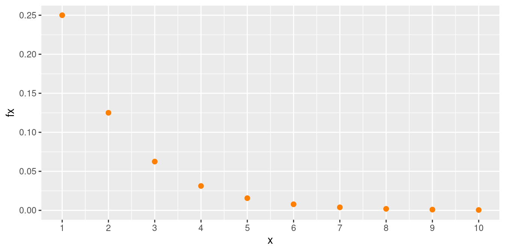
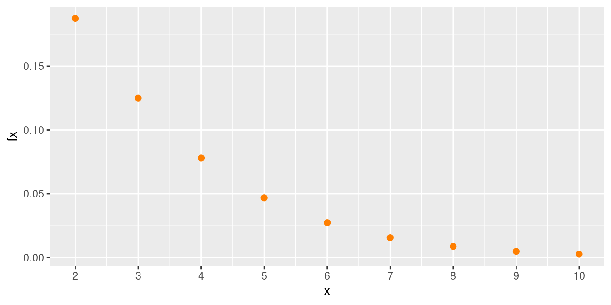

A continuación se presentan los principales modelos discretos, acompañados de ejemplos resueltos.
Toda variable aleatoria se puede caracterizar por su función de distribución de probabilidad \(f(x)\) , la función de probabilidad acumulada \(F(x)\) que representa \(P(X \leq x)\), el valor esperado \(E[X]\), la varianza \(V[X]\), y en el caso de las variables conjuntas la función de distribución conjunta \(f_{_{XY}}(x,y)\). También característica de ellas como son: el valor esperado conjunto \(E[XY]\) , la covarianza \(Cov[XY]\) y el coeficiente de correlación \(\rho_{_{XY}}\) para las variables \(X\) y \(Y\).
A continuación se presentan los modelos más comunes con sus principales características:
| Bernoulli | Binomial | Poisson | Hipergeométrico | Geométrico o de Pascal | Binomial negativo |
Hemos clasificado como variables discretas aquellas cuyo rango \(R_{X}\), corresponde a un conjunto de valores finito o infinito numerables. También es común que estas variables sean asociadas con el conteo, por lo que en su mayoría contienen la palabras número de…
A continuación se presentan los principales modelos discretos.
Empezaremos enunciando el modelo Bernoulli, aunque algunos autores no lo reconocen como modelo, ayuda en la compresión de los modelos siguientes. Toma su nombre del matemático Jacob Bernoulli.
Distribución Bernoulli
Una variable que se distribuye Bernoulli, procede de un experimento Bernoulli, descrito por las siguientes características:
El experimento consta de un ensayo.
El ensayo solo tiene dos posible resultados: éxito (E), fracaso (F).
La probabilidad de éxito es \(p\), la probabilidad de fracaso es \(1-p=q\)
La variable objeto de estudio es \(X\): hay o no éxito éxitos en un ensayo de Bernoulli. Sus principales características son:
Rango : \(R_{X}=\{0,1 \}\), Función de distribución de probabilidad $
\[\begin{equation*} f(x)=\left\lbrace \begin{array}{lll} p & \mbox{si } x=1 \\ q & \mbox{si } x=0 \end{array} \right. \end{equation*}\]
\[E[X]= p\]
\[V[X]= pq\]
El modelo binomial, que puede verse como una generalización del modelo Bernoulli, pasando de un ensayo a \(n\) ensayos. Fue investigada y analizada por el físico y matemático suizo Jakob Bernoulli en relación con problemas presentados en los juegos de azar. Su trabajo fue presentado en 1713.
Distribución binomial
Una variable con distribución binomial es aquella que procede de un experimento binomial.
Ahora un experimento binomial tiene las siguientes características:
El experimento consta de \(n\) ensayos
Cada ensayo tiene solo dos posible resultados: éxito (E) o fracaso (F) (experimento Bernoulli),
La probabilidad de éxito es igual a \(p\) y se mantiene fija para todos los ensayos P(E). La probabilidad de fracaso es \((1-p)=q\),
Los ensayos son independientes,
La variable objeto de estudio \(X\), corresponde al número de éxitos obtenidos en los \(n\) ensayos.
Se puede decir que la suma de \(n\) variables independientes con distribución Bernoulli(\(p\)), se distribuye de manera Bionomial(\(n,p\))
La función de distribución de probabilidad está dada por:
\[\begin{equation*} f(x)=\left\lbrace \begin{array}{lll} \displaystyle\binom{n}{x} p^{x} (1-p)^{n-x} &,& x=0,1,2, \ldots, n \\ &&\\ 0 &,& \mbox{en otro caso} \end{array} \right. \end{equation*}\]
\[E[X]=np\]
\[V[X]= np(1-p) \]
\(X \sim binom(x,n=10,p=0.30)\)
El modelo Poisson fue plantea por el físico y matemático francés Siméon-Denis Poissonen uno de sus trabajos presentado en 1838 relacionado con temas sobre juicios en temas criminales y civiles. Es utilizado para resolver problemas asociados con el número de eventos que ocurren en un intervalo de tiempo o espacio, como por ejemplo:
número de llamadas que recibe un conmutador durante una hora
número de plaquetas por \(mm^{3}\) de sangre
número de servicios técnicos solicitados por día
número de imperfecciones por \(m^{2}\) de carretera
Distribución Pisson
La función de distribución de probabilidad de una variable con distribución Poisson esta dada por siguiente la expresión:
\(\begin{equation*} f(x)=\left\lbrace \begin{array}{lll} \dfrac{\lambda^{x}}{x!} \hspace{.2cm} e^{-\lambda} &,& x \geq 0 \\ &&\\ 0 &,& \mbox{en otro caso} \end{array} \right. \end{equation*}\)
Donde \(\lambda\) es la cantidad promedio de ocurrencias en el periodo de interés.
\[E[X]=\lambda\]
\[V[X]=\lambda \] La variable objeto de estudio \(X\) es el número de eventos que ocurren por unidad de tiempo, longitud, superficie o volumen
La siguiente gráfica representa la distribución de masa de una variable de Poisson con media 2.
\(X \sim poiss(x,\lambda=2)\)
Este modelo hipergeométrico nace de la necesidad de modelar eventos Bernoulli con probabilidad no constante generados en elecciones sin repetición.
Distribución hipergeometrica
Se tiene un conjunto de \(N\) objetos que contiene \(K\) objetos clasificados como éxitos y \(N-K\) objetos clasificados como fracasos. Una muestra de tamaño \(n\) objetos es seleccionada al azar (sin reemplazo) de la población de \(N\) objetos, donde \(K \leq N\) y $n N $. La variable de interés \(X\) corresponde al número de éxitos obtenidos en la muestra.
Su función de masa de probabilidad esta dada por
\[\begin{equation*} f(x)=\left\lbrace \begin{array}{lll} \dfrac{\displaystyle\binom{K}{x} \displaystyle\binom{N-K}{n-x}}{\displaystyle\binom{N}{n}} &, {\text{ si }\max(0,K+n-N) \leq x \leq \min(n,K) }& \\ &\\ 0, \mbox{en otro caso} \end{array} \right. \end{equation*}\]
\[E[X]=\dfrac{nK}{N}\] \[V[X]=n\Bigg(\frac{K}{N}\Bigg) \Bigg(1-\dfrac{K}{N}\Bigg)\Bigg(\dfrac{N-n}{N-1}\Bigg)\]
\(X \sim hyperg(x, m=95, n=5, k=10)\)
La distribución geométrica también conocida como distribución de Pascal, fue esbozada en el escrito El arte de la conjetura, escrita por Jakob Bernoulli. Esta distribución modela el número de ensayos Bernoulli necesarios para obtener el primer éxito. Los valores que puede tomar esta variable son:
| \(x\) | eventos | \(f(x)\) |
|---|---|---|
| \(1\) | \(E\) | \(p\) |
| \(2\) | \(FE\) | \(p(1-p)\) |
| \(3\) | \(FFE\) | \(p(1-p)^{2}\) |
| \(4\) | \(FFFE\) | \(p(1-p)^{3}\) |
| \(5\) | \(FFFFE\) | \(p(1-b)^{4}\) |
| \(x\) | $FFFF FE | \(p(1-p)^{x-1}\) |
La variable \(X\) toma el valor de \(1\) cuando el éxito ocurre en el primer intento. Cuando el primer éxito ocurre en el evento dos, \(X\) es igual a \(2\), es decir que la variable con distribución geométrica corresponde al número del evento donde ocurre el primer éxito.
Distribución geométrica
\[\begin{equation*} f(x)=\left\lbrace \begin{array}{lll} p(1-p)^{x-1} &,& x \geq 1 \\ &&\\ 0 &,& \mbox{en otro caso} \end{array} \right. \end{equation*}\]
\[E[X]=\dfrac{1}{p}\]
\[V[X]=\dfrac{1-p}{p^{2}} \]
Nota: En R la variable corresponde al número de fracasos
necesarios para obtener el primer éxito
\(X \sim geom(x,p=0.5)\)

La distribución binomial negativa esta relacionada con la distribución geométrica
Distribución binomial negativa
El modelo binomial negativo* se considera una generalización de la distribución Geométrica. En este caso la variable objeto de estudio corresponde a \(X\): número de ensayos requeridos para obtener \(r\) éxitos**. Esta variable se obtiene al sumar \(r\) variables con distribución Geométrica con igual parámetro \(p\).
Su función de masa está dada por :
\[\begin{equation*} f(x)=\left\lbrace \begin{array}{lll} \displaystyle \binom{x-1}{r-1} p^{r} (1-p)^{x-r} &,& x= r, r+1, \ldots \\ &&\\ 0 &,& \mbox{en otro caso} \end{array} \right. \end{equation*}\]
\[E[X]=\dfrac{r}{p}\]
\[V[X]=\dfrac{r(1-p)}{p^{2}}\]
\(X \sim nbiom(x,k=2, p=0.50)\)
